Compute and view possible differences between paired sets of ages.
Source:R/ageComparisons.R
ageBias.RdConstructs age-agreement tables, statistical tests to detect differences, and plots to visualize potential differences in paired age estimates. Ages may be from, for example, two readers of the same structure, one reader at two times, two structures (e.g., scales, spines, otoliths), or one structure and known ages.
ageBias(formula, data, ref.lab = tmp$Enames, nref.lab = tmp$Rname, method = stats::p.adjust.methods, sig.level = 0.05, min.n.CI = 3) # S3 method for ageBias summary(object, what = c("table", "symmetry", "Bowker", "EvansHoenig", "McNemar", "bias", "diff.bias", "n"), flip.table = FALSE, zero.print = "-", digits = 3, cont.corr = c("none", "Yates", "Edwards"), ...) # S3 method for ageBias plot(x, xvals = c("reference", "mean"), xlab = ifelse(xvals == "reference", x$ref.lab, "Mean Age"), ylab = paste(x$nref.lab, "-", x$ref.lab), xlim = NULL, ylim = NULL, yaxt = graphics::par("yaxt"), xaxt = graphics::par("xaxt"), col.agree = "gray60", lwd.agree = lwd, lty.agree = 2, lwd = 1, sfrac = 0, show.pts = NULL, pch.pts = 20, cex.pts = ifelse(xHist | yHist, 1.5, 1), col.pts = "black", transparency = 1/10, show.CI = FALSE, col.CI = "black", col.CIsig = "red", lwd.CI = lwd, sfrac.CI = sfrac, show.range = NULL, col.range = ifelse(show.CI, "gray70", "black"), lwd.range = lwd, sfrac.range = sfrac, pch.mean = 19, pch.mean.sig = ifelse(show.CI | show.range, 21, 19), cex.mean = lwd, yHist = TRUE, xHist = NULL, hist.panel.size = 1/7, col.hist = "gray90", allowAdd = FALSE, ...)
Arguments
| formula | A formula of the form |
|---|---|
| data | A data.frame that minimally contains the paired age estimates given in |
| ref.lab | A string label for the reference age estimates. |
| nref.lab | A string label for the nonreference age estimates. |
| method | A string for which method to use to adjust p-values for multiple comparisons. See |
| sig.level | A numeric value to determine whether a p-value indicates a significant result. The confidence level used in |
| min.n.CI | A numeric value (default is 3) that is the smallest sample size for which a confidence interval will be computed. |
| what | A string that indicates what type of summary to print or plot to construct. See details. |
| flip.table | A logical that indicates whether the age-agreement table should be ‘flipped’ (i.e., rows are reversed so that younger ages are at the bottom of the table). This makes the table more directly comparable to the age bias plot. |
| zero.print | A string for what should be printed in place of the zeros on an age-agreement table. The default is to print a single dash. |
| digits | A numeric for the minimum number of digits to print when showing |
| cont.corr | A string that indicates the continuity correction method to be used with (only) McNemar test. If |
| … | Additional arguments for methods. |
| x, object | An object of class |
| xvals | A string for whether the x-axis values are reference ages or mean of the reference and nonreference ages. |
| xlab, ylab | A string label for the x-axis (reference) or y-axis (non-reference) age estimates, respectively. |
| xlim, ylim | A numeric vector of length 2 that contains the limits of the x-axis (reference ages) or y-axis (non-reference ages), respectively. |
| xaxt, yaxt | A string which specifies the x- and y-axis types. Specifying “n” suppresses plotting of the axis. See |
| col.agree | A string or numeric for the color of the 1:1 or zero (if |
| lwd.agree | A numeric for the line width of the 1:1 or zero (if |
| lty.agree | A numeric for the line type of the 1:1 or zero (if |
| lwd | A numeric that controls the separate ‘lwd’ argument (e.g., |
| sfrac | A numeric that controls the separate ‘sfrac’ arguments (e.g., |
| show.pts | A logical for whether or not the raw data points are plotted. |
| pch.pts | A numeric for the plotting character of the raw data points. |
| cex.pts | A character expansion value for the size of the symbols for |
| col.pts | A string or numeric for the color of the raw data points. The default is to use black with the transparency found in |
| transparency | A numeric (between 0 and 1) for the level of transparency of the raw data points. This number of points plotted on top of each other will represent the color in |
| show.CI | A logical for whether confidence intervals should be plotted or not. |
| col.CI | A string or numeric for the color of confidence interval bars that are considered non-significant. |
| col.CIsig | A string or numeric for the color of confidence interval bars that are considered significant. |
| lwd.CI | A numeric for the line width of the confidence interval bars. |
| sfrac.CI | A numeric for the size of the ends of the confidence interval bars. See |
| show.range | A logical for whether or not vertical bars that represent the range of the data points are plotted. |
| col.range | A string or numeric for the color of the range intervals. |
| lwd.range | A numeric for the line width of the range intervals. |
| sfrac.range | A numeric for the size of the ends of the range intervals. See |
| pch.mean | A numeric for the plotting character used for the mean values when the means are considered insignificant. |
| pch.mean.sig | A numeric for the plotting character for the mean values when the means are considered significant. |
| cex.mean | A character expansion value for the size of the mean symbol in |
| yHist | A logical for whether a histogram of the y-axis variable should be added to the right margin of the age bias plot. See details. |
| xHist | A logical for whether a histogram of the x-axis variable should be added to the top margin of the age bias plot. See details. |
| hist.panel.size | A numeric between 0 and 1 that indicates the proportional size of histograms (relative to the entire plotting pane) in the plot margins (only used if |
| col.hist | A string for the color of the bars in the marginal histograms (only used if |
| allowAdd | A logical that will allow the user to add items to the main (i.e., not the marginal histograms) plot panel (if |
Value
ageBias returns a list with the following items:
data A data.frame with the original paired age estimates and the difference between those estimates.
agree The age-agreement table.
bias A data.frame that contains the bias statistics.
bias.diff A data.frame that contains the bias statistics for the differences.
ref.lab A string that contains an optional label for the age estimates in the columns (reference) of the age-agreement table.
nref.lab A string that contains an optional label for the age estimates in the rows (non-reference) of the age-agreement table.
summary returns the result if what= contains one item, otherwise it returns nothing. Nothing is returned by plot or plotAB, but see details for a description of the plot that is produced.
Details
Generally, one of the two age estimates will be identified as the “reference” set. In some cases this may be the true ages, the ages from the more experienced reader, the ages from the first reading, or the ages from the structure generally thought to provide the most accurate results. In other cases, such as when comparing two novice readers, the choice may be arbitrary. The reference ages will form the columns of the age-agreement table and will be the “constant” age used in the t-tests and age bias plots (i.e., the x-axis). See further details below.
The age-agreement table is constructed with what="table" in summary. The agreement table can be “flipped” (i.e., the rows in descending rather than ascending order) with flip.table=TRUE. By default, the tables are shown with zeros replaced by dashes. This behavior can be changed with zero.print.
Three statistical tests of symmetry for the age-agreement table can be computed with what= in summary. The “unpooled” or Bowker test as described in Hoenig et al. (1995) is constructed with what="Bowker", the “semi-pooled” or Evans-Hoenig test as described in Evans and Hoenig (1998) is constructed with what="EvansHoenig", and the “pooled” or McNemar test as described in Evans and Hoenig (1998) is constructed with what="McNemar". All three tests are computed with what="symmetry".
The age bias plot introduced by Campana et al. (1995) can be constructed with plotAB. Muir et al. (2008) modified the original age bias plot by plotting the difference between the two ages on the y-axis (still against a reference age on the x-axis). McBride (2015) introduced the Bland-Altman plot for comparing fish ages where the difference in ages is plotted on the y-axis versus the mean of the ages on the x-axis. Modifications of these plots are created with plot (rather than plotAB) using xvals= to control what is plotted on the x-axis (i.e., xvals="reference" uses the reference ages, whereas xvals="mean" uses the mean of the two ages for the x-axis). In both plots, a horizontal agreement line at a difference of zero is shown for comparative purposes. In addition, a histogram of the differences is shown in the right margin (can be excluded with yHist=FALSE.) A histogram of the reference ages is shown by default in the top margin for the modified age bias plot, but not for the modified Bland-Altman-like plot (the presence of this histogram is controlled with xHist=).
By default, the modified age bias plot shows the mean and range for the nonreference ages at each of the reference ages. Means shown with an open dot are mean age differences that are significantly different from zero. The ranges of differences in ages at each reference age can be removed with show.range=FALSE. A confidence interval for difference in ages can be added with show.CI=FALSE. Confidence intervals are only shown if the sample size is greater than the value in min.n.CI= (also from the original call to ageBias). Confidence intervals plotted in red with an open dot (by default; these can be changed with col.CIsig and pch.mean.sig, respectively) do not contain the reference age (see discussion of t-tests below). Individual points are plotted if show.pts=TRUE, where there color is controlled by col.pts= and transparency=. See examples for use of these arguments.
The main (i.e., not the marginal histograms) can be "added to" after the plot is constructed if allowAdd=TRUE is used. For example, the Bland-Altman-like plot can be augmented with a horizontal line at the mean difference in ages, a line for the regression between the differences and the means, or a generalized additive model that describes the relationship between the differences and the means. See the examples for use of allowAdd=TRUE. It is recommended to save the plotting parameters (e.g., op <- par(no.readonly=TRUE)) before using plot with allowAdd=TRUE so that the original parameters can be reset (e.g., par(op)); see the examples.
Individual t-tests to determine if the mean age of the nonreference set at a particular age of the reference set is equal to the reference age (e.g., is the mean age of the nonreference set at age-3 of the reference set statistically different from 3?) are shown with what="bias" in summary. The results provide a column that indicates whether the difference is significant or not as determined by adjusted p-values from the t-tests and using the significance level provided in sig.level (defaults to 0.05). Similar results for the difference in ages (e.g., is the mean reference age minus nonreference age at a nonreference age of 3 different from 0?) are constructed with what="diff.bias" in summary.
The sample size present in the age-agreement table is found with what="n".
Testing
Tested all symmetry test results against results in Evans and Hoenig (2008), the McNemar and Evans-Hoenig results against results from compare2 in fishmethods, and all results using the AlewifeLH data set from FSAdata against results from the online resource at http://www.nefsc.noaa.gov/fbp/age-prec/.
IFAR Chapter
4-Age Comparisons. Note that plot has changed since IFAR was published. Some of the original functionality is in plotAB.
References
Ogle, D.H. 2016. Introductory Fisheries Analyses with R. Chapman & Hall/CRC, Boca Raton, FL.
Campana, S.E., M.C. Annand, and J.I. McMillan. 1995. Graphical and statistical methods for determining the consistency of age determinations. Transactions of the American Fisheries Society 124:131-138. [Was (is?) available from http://www.bio.gc.ca/otoliths/documents/Campana%20et%20al%201995%20TAFS.pdf.]
Evans, G.T. and J.M. Hoenig. 1998. Testing and viewing symmetry in contingency tables, with application to readers of fish ages. Biometrics 54:620-629.
Hoenig, J.M., M.J. Morgan, and C.A. Brown. 1995. Analysing differences between two age determination methods by tests of symmetry. Canadian Journal of Fisheries and Aquatic Sciences 52:364-368.
McBride, R.S. 2015. Diagnosis of paired age agreement: A simulation approach of accuracy and precision effects. ICES Journal of Marine Science 72:2149-2167.
Muir, A.M., M.P. Ebener, J.X. He, and J.E. Johnson. 2008. A comparison of the scale and otolith methods of age estimation for lake whitefish in Lake Huron. North American Journal of Fisheries Management 28:625-635. [Was (is?) available from http://www.tandfonline.com/doi/abs/10.1577/M06-160.1]
See also
See agePrecision for measures of precision between pairs of age estimates. See compare2 in fishmethods for similar functionality. See plotAB for a more traditional age-bias plot.
Examples
ab1 <- ageBias(scaleC~otolithC,data=WhitefishLC, ref.lab="Otolith Age",nref.lab="Scale Age") summary(ab1)#> Sample size in the age agreement table is 151. #> #> Summary of Scale Age by Otolith Age #> otolithC n min max mean SE t adj.p sig LCI UCI #> 1 9 1 2 1.44 0.176 2.530 0.28212 FALSE 1.039 1.85 #> 2 7 1 5 2.00 0.577 0.000 1.00000 FALSE 0.587 3.41 #> 3 17 1 6 3.35 0.242 1.461 0.81743 FALSE 2.841 3.87 #> 4 18 2 6 3.83 0.232 -0.718 1.00000 FALSE 3.343 4.32 #> 5 8 4 8 5.25 0.491 0.509 1.00000 FALSE 4.089 6.41 #> 6 10 3 6 4.60 0.267 -5.250 0.00686 TRUE 3.997 5.20 #> 7 9 5 10 6.44 0.556 -1.000 1.00000 FALSE 5.163 7.73 #> 8 12 5 8 6.08 0.288 -6.665 0.00053 TRUE 5.450 6.72 #> 9 10 6 8 7.20 0.200 -9.000 0.00014 TRUE 6.748 7.65 #> 10 9 6 8 7.11 0.261 -11.086 0.00007 TRUE 6.510 7.71 #> 11 8 5 9 7.25 0.453 -8.275 0.00103 TRUE 6.178 8.32 #> 12 7 6 12 8.43 0.782 -4.564 0.04600 TRUE 6.514 10.34 #> 13 7 6 13 8.86 1.010 -4.101 0.06349 FALSE 6.385 11.33 #> 14 3 6 13 8.67 2.186 -2.440 0.80891 FALSE -0.738 18.07 #> 15 5 9 14 11.00 0.949 -4.216 0.12165 FALSE 8.366 13.63 #> 16 4 10 15 12.50 1.041 -3.363 0.30552 FALSE 9.188 15.81 #> 17 4 9 13 11.00 0.816 -7.348 0.05729 FALSE 8.402 13.60 #> 18 2 7 13 10.00 NA NA NA FALSE NA NA #> 19 1 14 14 14.00 NA NA NA FALSE NA NA #> 23 1 10 10 10.00 NA NA NA FALSE NA NA #> #> Summary of Scale Age-Otolith Age by Otolith Age #> otolithC n min max mean SE t adj.p sig LCI UCI #> 1 9 0 1 0.444 0.176 2.530 0.28212 FALSE 0.0393 0.850 #> 2 7 -1 3 0.000 0.577 0.000 1.00000 FALSE -1.4127 1.413 #> 3 17 -2 3 0.353 0.242 1.461 0.81743 FALSE -0.1593 0.865 #> 4 18 -2 2 -0.167 0.232 -0.718 1.00000 FALSE -0.6566 0.323 #> 5 8 -1 3 0.250 0.491 0.509 1.00000 FALSE -0.9110 1.411 #> 6 10 -3 0 -1.400 0.267 -5.250 0.00686 TRUE -2.0032 -0.797 #> 7 9 -2 3 -0.556 0.556 -1.000 1.00000 FALSE -1.8367 0.726 #> 8 12 -3 0 -1.917 0.288 -6.665 0.00053 TRUE -2.5496 -1.284 #> 9 10 -3 -1 -1.800 0.200 -9.000 0.00014 TRUE -2.2524 -1.348 #> 10 9 -4 -2 -2.889 0.261 -11.086 0.00007 TRUE -3.4898 -2.288 #> 11 8 -6 -2 -3.750 0.453 -8.275 0.00103 TRUE -4.8216 -2.678 #> 12 7 -6 0 -3.571 0.782 -4.564 0.04600 TRUE -5.4860 -1.657 #> 13 7 -7 0 -4.143 1.010 -4.101 0.06349 FALSE -6.6146 -1.671 #> 14 3 -8 -1 -5.333 2.186 -2.440 0.80891 FALSE -14.7381 4.071 #> 15 5 -6 -1 -4.000 0.949 -4.216 0.12165 FALSE -6.6340 -1.366 #> 16 4 -6 -1 -3.500 1.041 -3.363 0.30552 FALSE -6.8124 -0.188 #> 17 4 -8 -4 -6.000 0.816 -7.348 0.05729 FALSE -8.5985 -3.402 #> 18 2 -11 -5 -8.000 NA NA NA FALSE NA NA #> 19 1 -5 -5 -5.000 NA NA NA FALSE NA NA #> 23 1 -13 -13 -13.000 NA NA NA FALSE NA NA #> #> Raw agreement table (square) #> Otolith Age #> Scale Age 1 2 3 4 5 6 7 8 9 10 11 12 13 14 15 16 17 18 19 20 21 22 23 #> 1 5 4 1 - - - - - - - - - - - - - - - - - - - - #> 2 4 1 - 1 - - - - - - - - - - - - - - - - - - - #> 3 - 1 10 6 - 1 - - - - - - - - - - - - - - - - - #> 4 - - 5 7 3 3 - - - - - - - - - - - - - - - - - #> 5 - 1 - 3 2 5 3 4 - - 1 - - - - - - - - - - - - #> 6 - - 1 1 2 1 3 4 1 2 1 1 2 1 - - - - - - - - - #> 7 - - - - - - 1 3 6 4 2 2 1 1 - - - 1 - - - - - #> 8 - - - - 1 - 1 1 3 3 3 1 - - - - - - - - - - - #> 9 - - - - - - - - - - 1 1 1 - 2 - 1 - - - - - - #> 10 - - - - - - 1 - - - - 1 1 - - 1 - - - - - - 1 #> 11 - - - - - - - - - - - - 1 - 1 - 2 - - - - - - #> 12 - - - - - - - - - - - 1 - - 1 1 - - - - - - - #> 13 - - - - - - - - - - - - 1 1 - 1 1 1 - - - - - #> 14 - - - - - - - - - - - - - - 1 - - - 1 - - - - #> 15 - - - - - - - - - - - - - - - 1 - - - - - - - #> 16 - - - - - - - - - - - - - - - - - - - - - - - #> 17 - - - - - - - - - - - - - - - - - - - - - - - #> 18 - - - - - - - - - - - - - - - - - - - - - - - #> 19 - - - - - - - - - - - - - - - - - - - - - - - #> 20 - - - - - - - - - - - - - - - - - - - - - - - #> 21 - - - - - - - - - - - - - - - - - - - - - - - #> 22 - - - - - - - - - - - - - - - - - - - - - - - #> 23 - - - - - - - - - - - - - - - - - - - - - - - #> #> Age agreement table symmetry test results #> symTest df chi.sq p #> 1 McNemar 1 51.57851 6.879037e-13 #> 2 EvansHoenig 10 62.46849 1.232555e-09 #> 3 Bowker 54 75.97662 2.598188e-02summary(ab1,what="symmetry")#> symTest df chi.sq p #> 1 McNemar 1 51.57851 6.879037e-13 #> 2 EvansHoenig 10 62.46849 1.232555e-09 #> 3 Bowker 54 75.97662 2.598188e-02summary(ab1,what="Bowker")#> symTest df chi.sq p #> 1 Bowker 54 75.97662 0.02598188summary(ab1,what="EvansHoenig")#> symTest df chi.sq p #> 1 EvansHoenig 10 62.46849 1.232555e-09summary(ab1,what="McNemar")#> symTest df chi.sq p #> 1 McNemar 1 51.57851 6.879037e-13summary(ab1,what="McNemar",cont.corr="Yates")#> symTest df chi.sq p #> 1 McNemar (Yates Correction) 1 50.92769 9.583228e-13summary(ab1,what="bias")#> otolithC n min max mean SE t adj.p sig LCI UCI #> 1 9 1 2 1.44 0.176 2.530 0.28212 FALSE 1.039 1.85 #> 2 7 1 5 2.00 0.577 0.000 1.00000 FALSE 0.587 3.41 #> 3 17 1 6 3.35 0.242 1.461 0.81743 FALSE 2.841 3.87 #> 4 18 2 6 3.83 0.232 -0.718 1.00000 FALSE 3.343 4.32 #> 5 8 4 8 5.25 0.491 0.509 1.00000 FALSE 4.089 6.41 #> 6 10 3 6 4.60 0.267 -5.250 0.00686 TRUE 3.997 5.20 #> 7 9 5 10 6.44 0.556 -1.000 1.00000 FALSE 5.163 7.73 #> 8 12 5 8 6.08 0.288 -6.665 0.00053 TRUE 5.450 6.72 #> 9 10 6 8 7.20 0.200 -9.000 0.00014 TRUE 6.748 7.65 #> 10 9 6 8 7.11 0.261 -11.086 0.00007 TRUE 6.510 7.71 #> 11 8 5 9 7.25 0.453 -8.275 0.00103 TRUE 6.178 8.32 #> 12 7 6 12 8.43 0.782 -4.564 0.04600 TRUE 6.514 10.34 #> 13 7 6 13 8.86 1.010 -4.101 0.06349 FALSE 6.385 11.33 #> 14 3 6 13 8.67 2.186 -2.440 0.80891 FALSE -0.738 18.07 #> 15 5 9 14 11.00 0.949 -4.216 0.12165 FALSE 8.366 13.63 #> 16 4 10 15 12.50 1.041 -3.363 0.30552 FALSE 9.188 15.81 #> 17 4 9 13 11.00 0.816 -7.348 0.05729 FALSE 8.402 13.60 #> 18 2 7 13 10.00 NA NA NA FALSE NA NA #> 19 1 14 14 14.00 NA NA NA FALSE NA NA #> 23 1 10 10 10.00 NA NA NA FALSE NA NAsummary(ab1,what="diff.bias")#> otolithC n min max mean SE t adj.p sig LCI UCI #> 1 9 0 1 0.444 0.176 2.530 0.28212 FALSE 0.0393 0.850 #> 2 7 -1 3 0.000 0.577 0.000 1.00000 FALSE -1.4127 1.413 #> 3 17 -2 3 0.353 0.242 1.461 0.81743 FALSE -0.1593 0.865 #> 4 18 -2 2 -0.167 0.232 -0.718 1.00000 FALSE -0.6566 0.323 #> 5 8 -1 3 0.250 0.491 0.509 1.00000 FALSE -0.9110 1.411 #> 6 10 -3 0 -1.400 0.267 -5.250 0.00686 TRUE -2.0032 -0.797 #> 7 9 -2 3 -0.556 0.556 -1.000 1.00000 FALSE -1.8367 0.726 #> 8 12 -3 0 -1.917 0.288 -6.665 0.00053 TRUE -2.5496 -1.284 #> 9 10 -3 -1 -1.800 0.200 -9.000 0.00014 TRUE -2.2524 -1.348 #> 10 9 -4 -2 -2.889 0.261 -11.086 0.00007 TRUE -3.4898 -2.288 #> 11 8 -6 -2 -3.750 0.453 -8.275 0.00103 TRUE -4.8216 -2.678 #> 12 7 -6 0 -3.571 0.782 -4.564 0.04600 TRUE -5.4860 -1.657 #> 13 7 -7 0 -4.143 1.010 -4.101 0.06349 FALSE -6.6146 -1.671 #> 14 3 -8 -1 -5.333 2.186 -2.440 0.80891 FALSE -14.7381 4.071 #> 15 5 -6 -1 -4.000 0.949 -4.216 0.12165 FALSE -6.6340 -1.366 #> 16 4 -6 -1 -3.500 1.041 -3.363 0.30552 FALSE -6.8124 -0.188 #> 17 4 -8 -4 -6.000 0.816 -7.348 0.05729 FALSE -8.5985 -3.402 #> 18 2 -11 -5 -8.000 NA NA NA FALSE NA NA #> 19 1 -5 -5 -5.000 NA NA NA FALSE NA NA #> 23 1 -13 -13 -13.000 NA NA NA FALSE NA NAsummary(ab1,what="n")#> Sample size in the age agreement table is 151.summary(ab1,what=c("n","symmetry","table"))#> Sample size in the age agreement table is 151. #> #> Raw agreement table (square) #> Otolith Age #> Scale Age 1 2 3 4 5 6 7 8 9 10 11 12 13 14 15 16 17 18 19 20 21 22 23 #> 1 5 4 1 - - - - - - - - - - - - - - - - - - - - #> 2 4 1 - 1 - - - - - - - - - - - - - - - - - - - #> 3 - 1 10 6 - 1 - - - - - - - - - - - - - - - - - #> 4 - - 5 7 3 3 - - - - - - - - - - - - - - - - - #> 5 - 1 - 3 2 5 3 4 - - 1 - - - - - - - - - - - - #> 6 - - 1 1 2 1 3 4 1 2 1 1 2 1 - - - - - - - - - #> 7 - - - - - - 1 3 6 4 2 2 1 1 - - - 1 - - - - - #> 8 - - - - 1 - 1 1 3 3 3 1 - - - - - - - - - - - #> 9 - - - - - - - - - - 1 1 1 - 2 - 1 - - - - - - #> 10 - - - - - - 1 - - - - 1 1 - - 1 - - - - - - 1 #> 11 - - - - - - - - - - - - 1 - 1 - 2 - - - - - - #> 12 - - - - - - - - - - - 1 - - 1 1 - - - - - - - #> 13 - - - - - - - - - - - - 1 1 - 1 1 1 - - - - - #> 14 - - - - - - - - - - - - - - 1 - - - 1 - - - - #> 15 - - - - - - - - - - - - - - - 1 - - - - - - - #> 16 - - - - - - - - - - - - - - - - - - - - - - - #> 17 - - - - - - - - - - - - - - - - - - - - - - - #> 18 - - - - - - - - - - - - - - - - - - - - - - - #> 19 - - - - - - - - - - - - - - - - - - - - - - - #> 20 - - - - - - - - - - - - - - - - - - - - - - - #> 21 - - - - - - - - - - - - - - - - - - - - - - - #> 22 - - - - - - - - - - - - - - - - - - - - - - - #> 23 - - - - - - - - - - - - - - - - - - - - - - - #> #> Age agreement table symmetry test results #> symTest df chi.sq p #> 1 McNemar 1 51.57851 6.879037e-13 #> 2 EvansHoenig 10 62.46849 1.232555e-09 #> 3 Bowker 54 75.97662 2.598188e-02# flip table (easy to compare to age bias plot) and show zeroes (not dashes) summary(ab1,what="table",flip.table=TRUE,zero.print="0")#> Otolith Age #> Scale Age 1 2 3 4 5 6 7 8 9 10 11 12 13 14 15 16 17 18 19 20 21 22 23 #> 23 0 0 0 0 0 0 0 0 0 0 0 0 0 0 0 0 0 0 0 0 0 0 0 #> 22 0 0 0 0 0 0 0 0 0 0 0 0 0 0 0 0 0 0 0 0 0 0 0 #> 21 0 0 0 0 0 0 0 0 0 0 0 0 0 0 0 0 0 0 0 0 0 0 0 #> 20 0 0 0 0 0 0 0 0 0 0 0 0 0 0 0 0 0 0 0 0 0 0 0 #> 19 0 0 0 0 0 0 0 0 0 0 0 0 0 0 0 0 0 0 0 0 0 0 0 #> 18 0 0 0 0 0 0 0 0 0 0 0 0 0 0 0 0 0 0 0 0 0 0 0 #> 17 0 0 0 0 0 0 0 0 0 0 0 0 0 0 0 0 0 0 0 0 0 0 0 #> 16 0 0 0 0 0 0 0 0 0 0 0 0 0 0 0 0 0 0 0 0 0 0 0 #> 15 0 0 0 0 0 0 0 0 0 0 0 0 0 0 0 1 0 0 0 0 0 0 0 #> 14 0 0 0 0 0 0 0 0 0 0 0 0 0 0 1 0 0 0 1 0 0 0 0 #> 13 0 0 0 0 0 0 0 0 0 0 0 0 1 1 0 1 1 1 0 0 0 0 0 #> 12 0 0 0 0 0 0 0 0 0 0 0 1 0 0 1 1 0 0 0 0 0 0 0 #> 11 0 0 0 0 0 0 0 0 0 0 0 0 1 0 1 0 2 0 0 0 0 0 0 #> 10 0 0 0 0 0 0 1 0 0 0 0 1 1 0 0 1 0 0 0 0 0 0 1 #> 9 0 0 0 0 0 0 0 0 0 0 1 1 1 0 2 0 1 0 0 0 0 0 0 #> 8 0 0 0 0 1 0 1 1 3 3 3 1 0 0 0 0 0 0 0 0 0 0 0 #> 7 0 0 0 0 0 0 1 3 6 4 2 2 1 1 0 0 0 1 0 0 0 0 0 #> 6 0 0 1 1 2 1 3 4 1 2 1 1 2 1 0 0 0 0 0 0 0 0 0 #> 5 0 1 0 3 2 5 3 4 0 0 1 0 0 0 0 0 0 0 0 0 0 0 0 #> 4 0 0 5 7 3 3 0 0 0 0 0 0 0 0 0 0 0 0 0 0 0 0 0 #> 3 0 1 10 6 0 1 0 0 0 0 0 0 0 0 0 0 0 0 0 0 0 0 0 #> 2 4 1 0 1 0 0 0 0 0 0 0 0 0 0 0 0 0 0 0 0 0 0 0 #> 1 5 4 1 0 0 0 0 0 0 0 0 0 0 0 0 0 0 0 0 0 0 0 0############################################################# ## Differences Plot (inspired by Muir et al. (2008)) # Default (ranges, open circles for sig diffs, marginal hists) plot(ab1)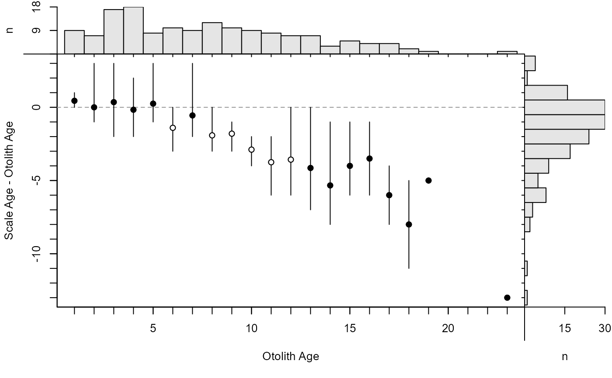# Show CIs for means (with and without ranges) plot(ab1,show.CI=TRUE)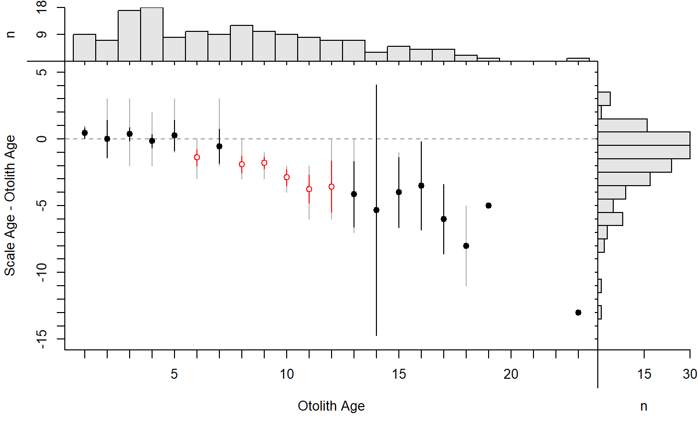plot(ab1,show.CI=TRUE,show.range=FALSE)# show points (with and without CIs) plot(ab1,show.CI=TRUE,show.range=FALSE,show.pts=TRUE)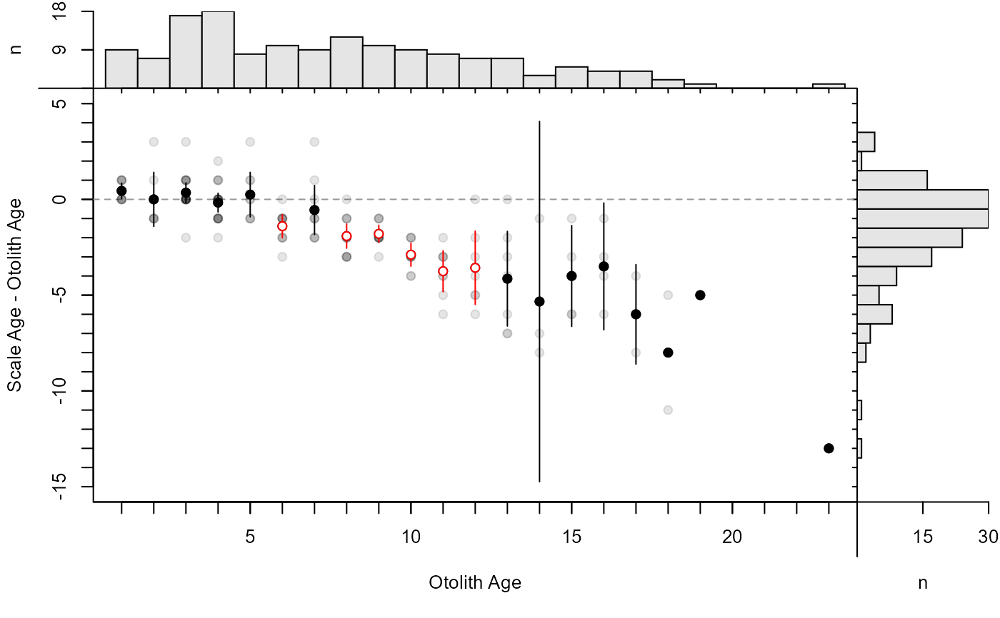plot(ab1,show.range=FALSE,show.pts=TRUE)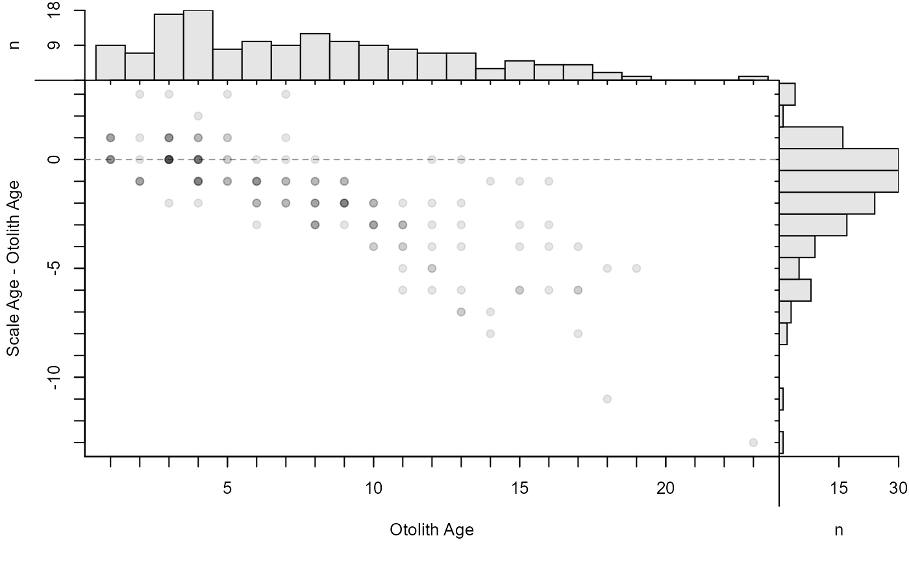# Use same symbols for all means (with ranges) plot(ab1,pch.mean.sig=19)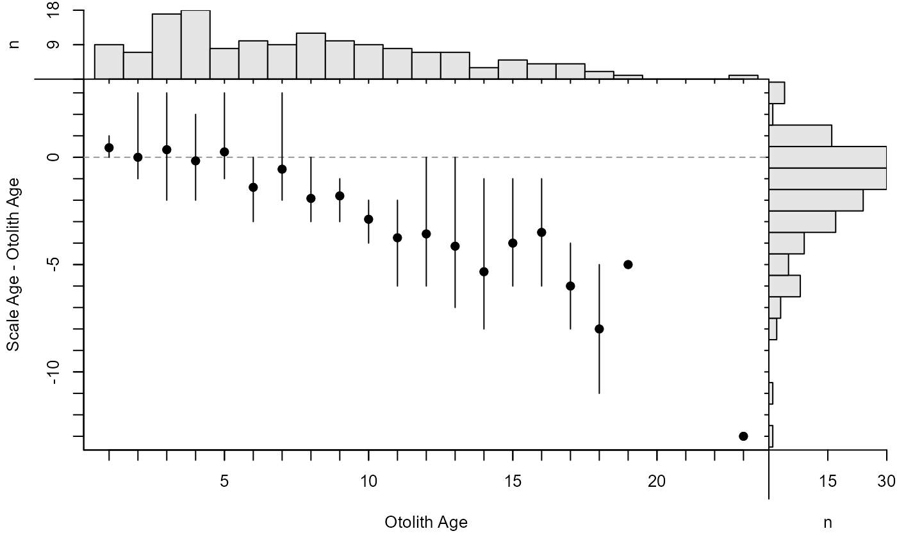# Use same symbols/colors for all means/CIs (without ranges) plot(ab1,show.range=FALSE,show.CI=TRUE,pch.mean.sig=19,col.CIsig="black")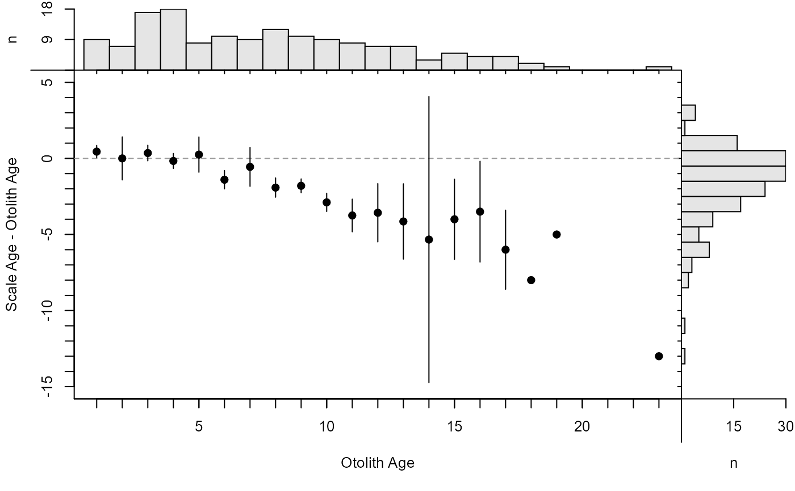# Remove histograms plot(ab1,xHist=FALSE)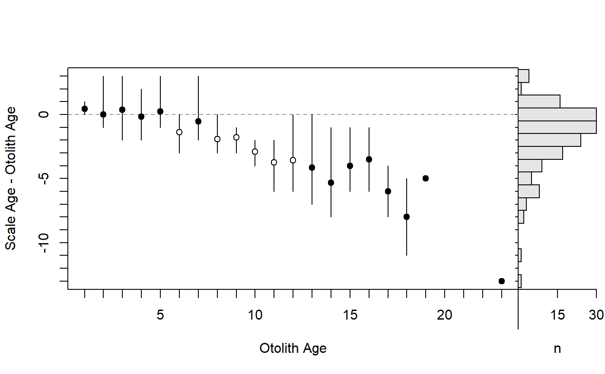plot(ab1,yHist=FALSE)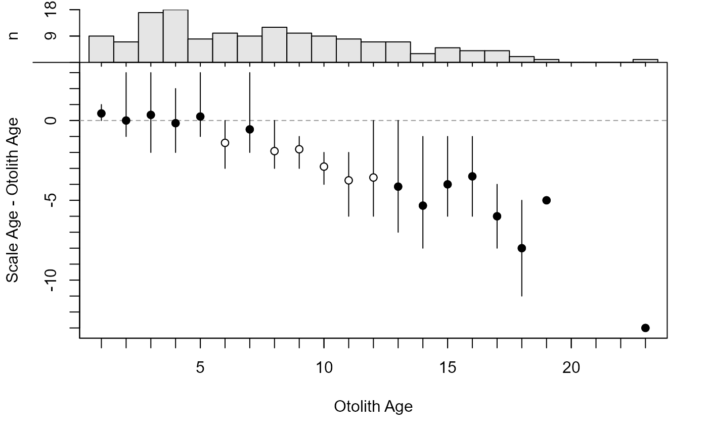plot(ab1,xHist=FALSE,yHist=FALSE)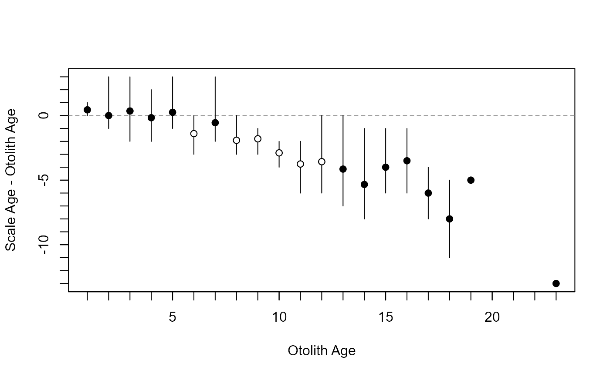## Suppress confidence intervals for n < a certain value ## must set this in the original ageBias() call ab2 <- ageBias(scaleC~otolithC,data=WhitefishLC,min.n.CI=8, ref.lab="Otolith Age",nref.lab="Scale Age") plot(ab2,show.CI=TRUE,show.range=FALSE)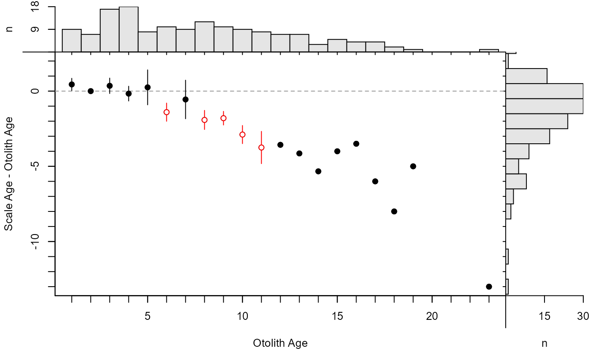############################################################# ## Differences Plot ( inspired by Bland-Altman plots in McBride (2015)) plot(ab1,xvals="mean")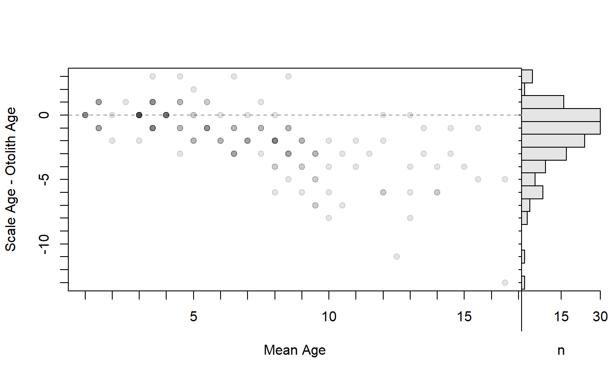## Modify axis limits plot(ab1,xvals="mean",xlim=c(1,17))## Add and remove histograms plot(ab1,xvals="mean",xHist=TRUE)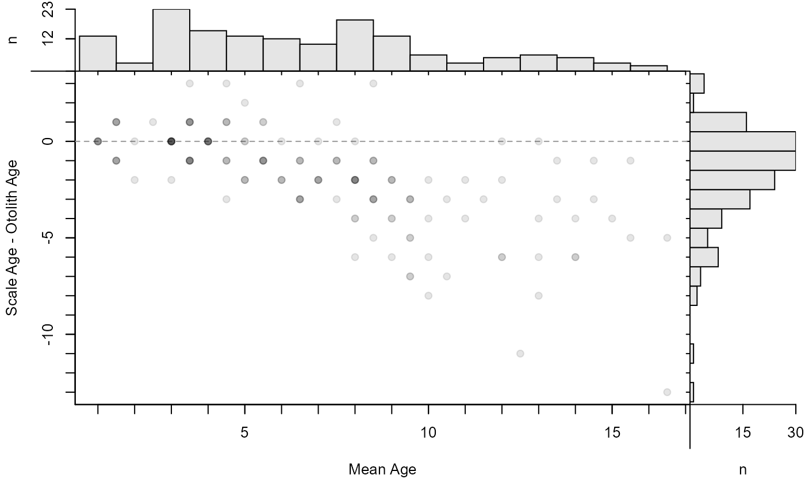plot(ab1,xvals="mean",xHist=TRUE,yHist=FALSE)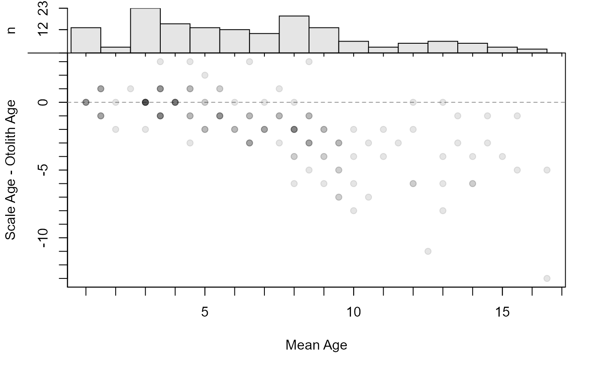plot(ab1,xvals="mean",yHist=FALSE)############################################################# ## Adding post hoc analyses to the main plot # get original graphing parameters to be reset at the end op <- par(no.readonly=TRUE) # get raw data tmp <- ab1$d head(tmp)#> scaleC otolithC diff mean #> 1 3 3 0 3.0 #> 2 4 3 1 3.5 #> 3 6 3 3 4.5 #> 4 4 3 1 3.5 #> 5 3 3 0 3.0 #> 6 4 6 -2 5.0# Add mean difference (w/ approx. 95% CI) bias <- mean(tmp$diff)+c(-1.96,0,1.96)*se(tmp$diff) plot(ab1,xvals="mean",xlim=c(1,17),allowAdd=TRUE)abline(h=bias,lty=2,col="red")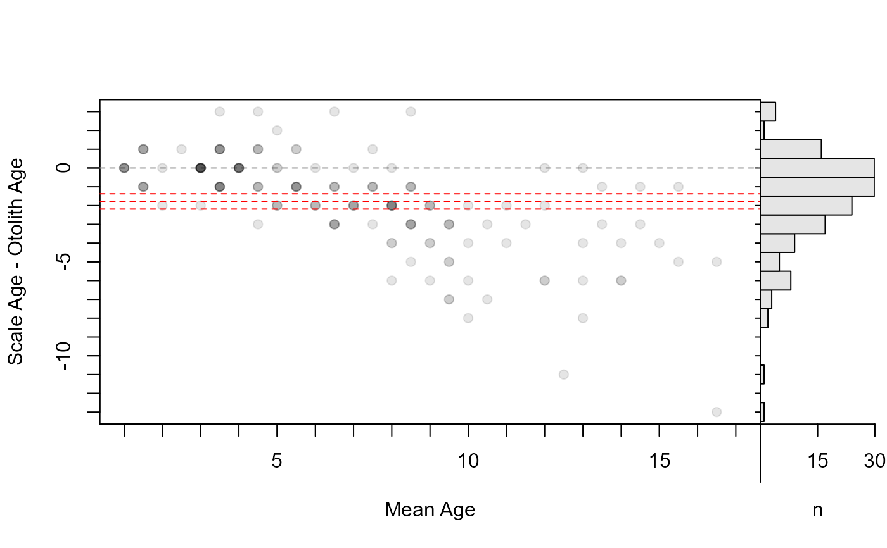par(op) # Same as above, but without marginal histogram, and with # 95% agreement lines as well (1.96SDs) # (this is nearly a replicate of a Bland-Altman plot) bias <- mean(tmp$diff)+c(-1.96,0,1.96)*se(tmp$diff) agline <- mean(tmp$diff)+c(-1.96,1.96)*sd(tmp$diff) plot(ab1,xvals="mean",yHist=FALSE,allowAdd=TRUE)abline(h=bias,lty=2,col="red")abline(h=agline,lty=3,lwd=2,col="blue")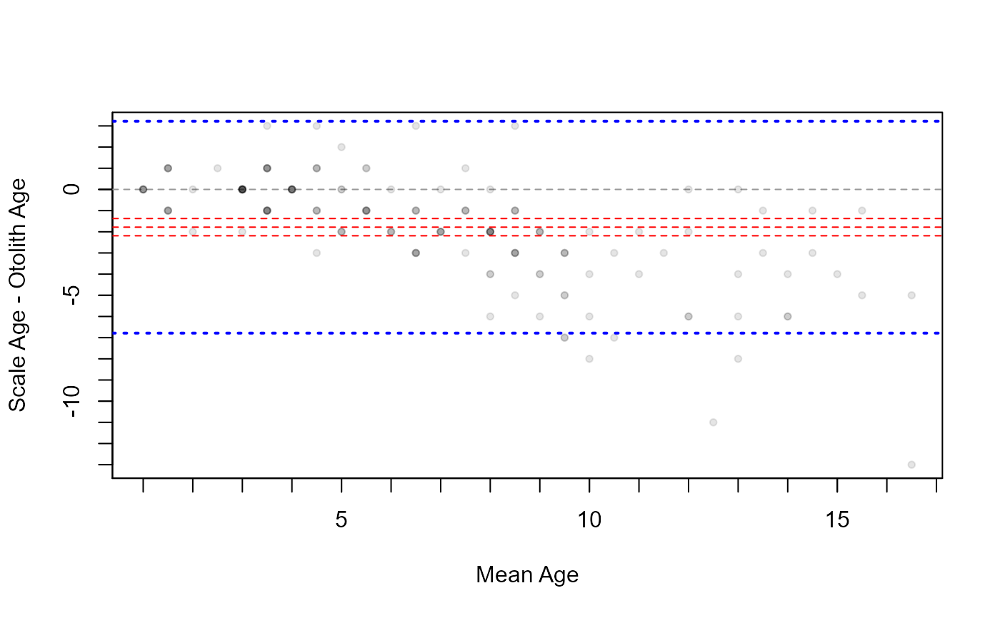par(op) # Add linear regression line of differences on means (w/ approx. 95% CI) lm1 <- lm(diff~mean,data=tmp) xval <- seq(0,19,0.1) pred1 <- predict(lm1,data.frame(mean=xval),interval="confidence") bias1 <- data.frame(xval,pred1) head(bias1)#> xval fit lwr upr #> 1 0.0 1.261964 0.6232456 1.900682 #> 2 0.1 1.217797 0.5861659 1.849428 #> 3 0.2 1.173630 0.5490612 1.798199 #> 4 0.3 1.129463 0.5119307 1.746995 #> 5 0.4 1.085296 0.4747735 1.695819 #> 6 0.5 1.041129 0.4375887 1.644670plot(ab1,xvals="mean",xlim=c(1,17),allowAdd=TRUE)lines(lwr~xval,data=bias1,lty=2,col="red")lines(upr~xval,data=bias1,lty=2,col="red")lines(fit~xval,data=bias1,lty=2,col="red")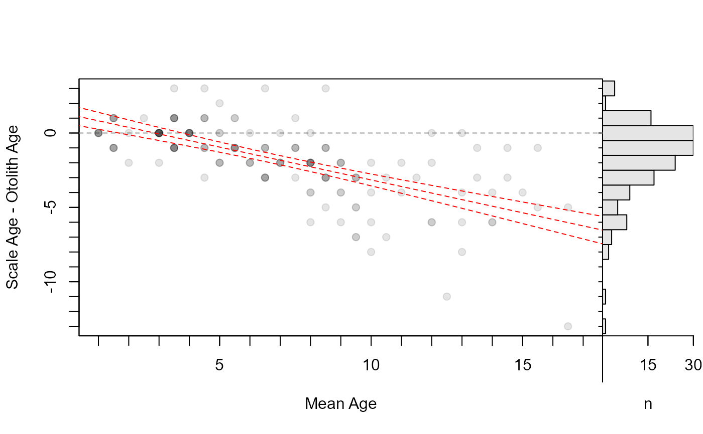par(op) # Add loess of differences on means (w/ approx. 95% CI as a polygon) lo2 <- loess(diff~mean,data=tmp) xval <- seq(min(tmp$mean),max(tmp$mean),0.1) pred2 <- predict(lo2,data.frame(mean=xval),se=TRUE) bias2 <- data.frame(xval,pred2) bias2$lwr <- bias2$fit-1.96*bias2$se.fit bias2$upr <- bias2$fit+1.96*bias2$se.fit head(bias2)#> xval fit se.fit residual.scale df lwr upr #> 1 1.0 -0.16024844 0.5716894 1.887342 145.685 -1.2807597 0.9602628 #> 2 1.1 -0.13313237 0.5396064 1.887342 145.685 -1.1907610 0.9244962 #> 3 1.2 -0.10771932 0.5091066 1.887342 145.685 -1.1055683 0.8901296 #> 4 1.3 -0.08401421 0.4802391 1.887342 145.685 -1.0252828 0.8572543 #> 5 1.4 -0.06202196 0.4530549 1.887342 145.685 -0.9500096 0.8259657 #> 6 1.5 -0.04174751 0.4276065 1.887342 145.685 -0.8798563 0.7963613plot(ab1,xvals="mean",xlim=c(1,17),allowAdd=TRUE)lines(fit~xval,data=bias2,lty=2,col="red")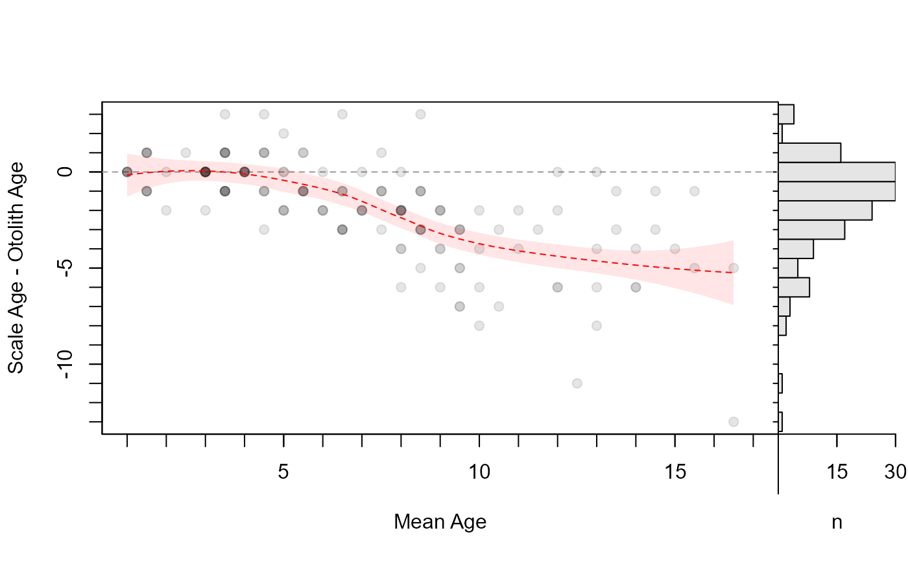par(op) # Same as above, but polygon and line behind the points plot(ab1,xvals="mean",xlim=c(1,17),col.pts="white",allowAdd=TRUE)lines(fit~xval,data=bias2,lty=2,col="red")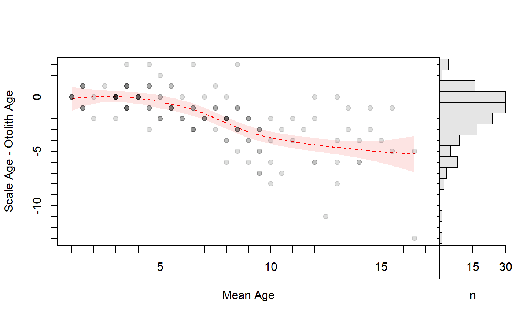par(op) # Can also be made with the reference ages on the x-axis lo3 <- loess(diff~otolithC,data=tmp) xval <- seq(min(tmp$otolithC),max(tmp$otolithC),0.1) pred3 <- predict(lo3,data.frame(otolithC=xval),se=TRUE) bias3 <- data.frame(xval,pred3) bias3$lwr <- bias3$fit-1.96*bias3$se.fit bias3$upr <- bias3$fit+1.96*bias3$se.fit plot(ab1,show.range=FALSE,show.pts=TRUE,col.pts="white",allowAdd=TRUE)lines(fit~xval,data=bias3,lty=2,col="red")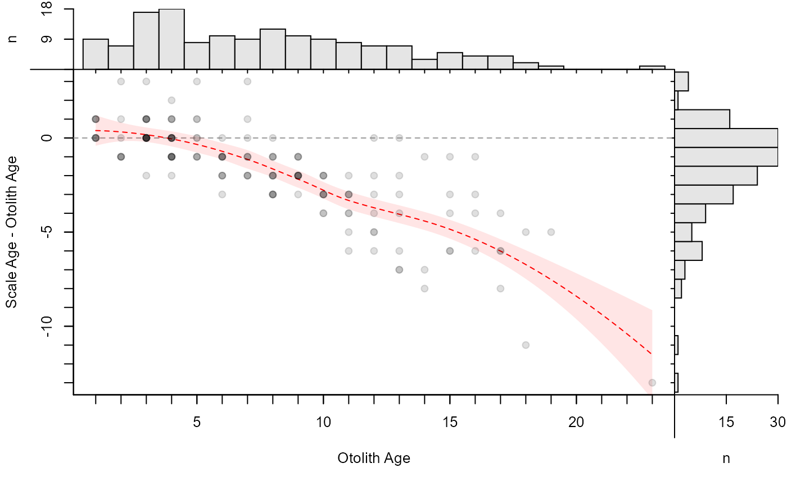par(op)